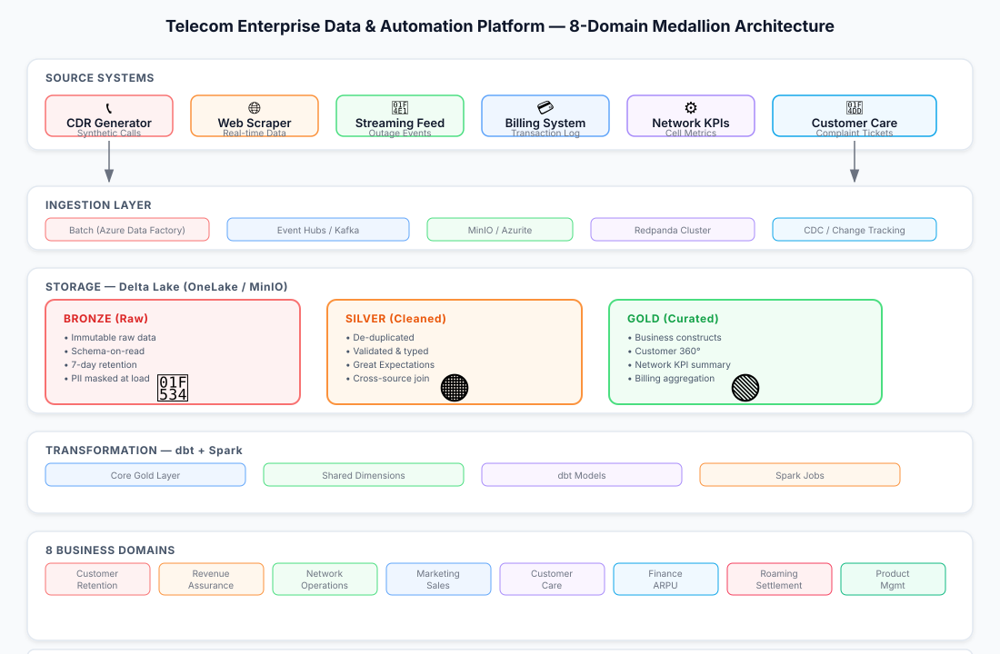

The Problem
Telecom operators face a fundamental tension: business domains need data fast, but data quality and governance can't be compromised. A single-source-of-truth approach is required across customer retention, revenue assurance, network operations, marketing, and more — yet each domain has distinct analytical needs.
The challenge was to build a platform that could ingest heterogeneous data sources (CDRs, billing systems, network KPIs, customer complaints), transform them through a governed pipeline, and serve eight business domains without fragmenting ownership or sacrificing auditability.
Architecture

Medallion Architecture
The platform follows a bronze → silver → gold Delta Lake pattern, ensuring every transformation is auditable and reproducible:
- Bronze: Immutable raw ingestion layer. CDRs, billing records, and streaming events land as-is. Schema-on-read preserves provenance.
- Silver: Cleaned, validated, PII-masked. Great Expectations run on every batch to catch schema drift before it propagates.
- Gold: Business-level constructs — Customer 360°, network summaries, billing aggregations. Single source of truth for all downstream consumers.
Eight Business Domains
Local-Cloud Parity
A core design principle: develop locally with Docker, deploy to Azure with identical configurations. This eliminates the classic "works on my machine" gap and ensures every environment behaves the same way.
| Environment | Purpose | Infrastructure |
|---|---|---|
| Local | Development & testing | Docker Compose (Azurite, MinIO, Redpanda) |
| Dev | Feature development | Azure F2 capacity |
| Staging | Pre-production validation | Azure F4 capacity |
| Production | Live traffic | Azure F8 capacity |
| Ephemeral | PR testing | Auto-delete after 24h |
MLOps & Governance
- MLflow tracking: Every experiment logged, model registry for version control, drift-triggered retraining pipelines
- Champion/challenger: A/B model promotion with automated evaluation gates
- Purview lineage: End-to-end data traceability from source to domain mart
- Unity Catalog: Centralized access control and metadata management
- Key Vault: All secrets rotated and managed centrally — zero hardcoded credentials
Outcome
The platform serves as the central data backbone for the organization, enabling eight business domains to build analytics on a consistent, governed foundation. The medallion architecture ensures reproducibility, while the local-cloud parity eliminates environment-specific bugs.
CI/CD pipelines with ephemeral environments mean every PR is tested against production-like infrastructure before merge. The self-healing patterns and automated alerting reduce operational overhead and improve mean time to recovery.